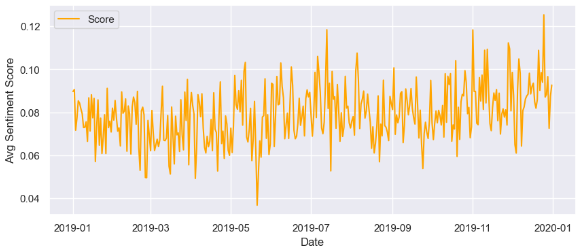

Analyzing Twitter Sentiment and its Impact on Tesla Stock.
In today's fast-paced digital age, the opinions expressed on social media can influence public perception, market behavior, and even stock prices. Traders, investors, and analysts are increasingly turning to sentiment analysis to gain a deeper understanding of market dynamics.
Why this project?
The motivation behind this project stems from the recognition that Twitter users often share their thoughts, feelings, and predictions about stocks and financial markets in real-time. Harnessing the sentiment embedded within these tweets could offer valuable predictive insights and assist in making informed investment decisions.
üéØ Area of Focus
In this project, through sentiment analysis, I aim to answer crucial question- Does the collective sentiment on Twitter impact stock prices?
By embarking on this project, I aspire to bridge the gap between social media (twitter) sentiment and financial markets, ultimately helping investors navigate the complexities of today's interconnected world.
üìÅ About Data and it's source
Data Source: The data for this project was sourced from Kaggle (link), a renowned platform for datasets and data science resources. The dataset used consists of three key tables: "Company," "Company_Tweet," and "Tweet."
- Company Table: The "Company" table includes two significant columns: "Company Name" and "Ticker Symbol."
- Company_Tweet Table: This table acts as a bridge between companies and their related tweets. It contains two essential columns: "Tweet ID" and "Ticker Symbol."
- Tweet Table: This table is the heart of the dataset, containing detailed information about individual tweets. It comprises of 7 columns:
- "Tweet ID"
- "Writer"
- "Postdate"
- "Body of tweet"
- "Number of Comments"
- "Number of Retweets"
- "Number of likes"
Data Coverage: The dataset consisted of a substantial collection of tweets, totaling 3,717,964 entries related to six companies, one of which is Tesla. These tweets spanned over a five-year period, from 2015 to 2020, providing a comprehensive and rich source of data for the analysis.
Data Filtering: For this project, I focused my analysis specifically on tweets related to Tesla during the year 2019. After applying the necessary filters, I obtained a subset of the dataset, which included 380115 tweets relevant to Tesla.
Data Integrity: It's important to note that data integrity was a key consideration in this project. The relationships between tables, particularly the use of "Tweet ID" and "Ticker Symbol" columns in the "Company_Tweet" table, were critical for linking tweets to specific companies accurately.
Data Preparation üîß
To ensure the text data was in a suitable format for sentiment analysis, several preprocessing steps were undertaken using the Python libraries re (regex) and nltk (Natural Language Toolkit). These steps included:
- üßπ Text Cleaning: Irrelevant characters, punctuation, URLs, and special symbols were removed from the tweets using 're' library. This step helped in eliminating noise from the text data, ensuring that only the relevant content was considered for sentiment analysis.
- ✂️ Tokenization: The nltk library's word_tokenize was utilized to split the text into individual words or tokens. Tokenization is a fundamental step in natural language processing (NLP) that breaks down the text into its constituent elements, making it easier to analyze.
- üö´ Stopword Removal: Common words such as "a," "the," "is," etc., were removed from the text data. These words, known as stopwords, do not typically contribute significant sentiment information and were thus excluded from the analysis to focus on meaningful content.
- üìö Lemmatization: To standardize the text and reduce words to their base or root form, WordNetLemmatizer from nltk was used. This process ensured that variations of words were simplified, making it easier to identify sentiment patterns consistently.
üìà Sentiment Analysis
Sentiment analysis was conducted using the TextBlob library, a powerful tool for natural language processing tasks. TextBlob provides a simple and intuitive interface for sentiment analysis, making it well-suited for this project. Following steps were performed:
- Polarity Score Calculation: TextBlob assigns a polarity score to each tweet, indicating the sentiment's intensity. The polarity score ranges from -1 (strongly negative) to 1 (strongly positive), with 0 representing neutrality. This score measures the overall sentiment expressed in the tweet.
- Labeling Sentiments: Sentiment labels were assigned to tweets based on a specific polarity score range, providing a nuanced understanding of sentiment. The labeling criteria were as follows:
- Neutral: Tweets with a sentiment polarity score equal to 0 were categorized as "Neutral."
- Weak Positive: Tweets with a sentiment polarity score greater than 0 and up to 0.3 were labeled as "Weak Positive."
- Positive: Tweets with a sentiment polarity score greater than 0.3 and up to 0.6 were classified as "Positive."
- Strong Positive: Tweets with a sentiment polarity score greater than 0.6 and up to 1 were identified as "Strong Positive."
- Weak Negative: Tweets with a sentiment polarity score less than or equal to 0 and greater than -0.3 were designated as "Weak Negative."
- Negative: Tweets with a sentiment polarity score less than or equal to -0.3 and greater than -0.6 were marked as "Negative."
- Strong Negative: Tweets with a sentiment polarity score less than or equal to -0.6 and greater than -1 were categorized as "Strong Negative."
Below is a table providing a visual representation of the distribution of sentiment labels across the tweets related to Tesla Company, offering insights into the prevailing sentiments within the dataset.
- Calculating Average Polarity Score per Day and Line Graph:
After categorizing tweets into sentiment labels and understanding their distribution, the analysis delved deeper by calculating the average polarity score per day. By averaging the polarity scores on a daily basis, we were able to identify daily trends in sentiment, allowing us to observe how public sentiment regarding Tesla fluctuated over time. The results were visualized using a line graph (as shown below), which plotted the average polarity score against time, showcasing the sentiment dynamics throughout the selected time frame.
